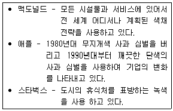
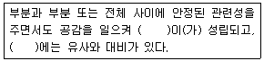

컬러리스트산업기사 (2013-03-10 기출문제)
1과목: 색채심리
1. SD법에 대한 설명으로 틀린 것은?
- 주로 반대어를 사용하여 감정을 다루는 것이다.
- Semantic Differential Method 의 약자이다.
- 두 개의 색채를 사용하여 선호도를 조사하는 것이다.
- 이미지 맵과 이미지 프로필로 결과를 볼 수 있다.
(정답률: 54%)

2. 색채와 라이프스타일의 특성에 대한 설명 중 틀린 것은?
- 색에 대한 일반적인 선호 경향과 특정제품에 대한 선호색은 다르다.
- 색채 선호의 연령 차이는 인종, 국가에 따라 전혀 다른 경향을 보인다.
- 색채와 라이프스타일의 관계는 사회 변화에 따라 끊임없이 변화한다.
- 자동차에 대한 선호색은 각 지역의 자연 환경 및 생활패턴 등에 따라 차이가 있다.
(정답률: 55%)
3. 색의 선호에 대한 일반적인 경향에 대한 설명으로 옳은 것은?
- 서구화된 나라일수록 검정색을 좋아하는 경향이 있다.
- 연령이 낮을수록 장파장의 원색계열과 밝은 톤을 선호한다.
- 지식수준이 높고 두뇌를 많이 사용하는 집단에 있는 사람들은 빨간색을 좋아하는 경향이 있다.
- 성인이 될수록 장파장의 빨강과 노랑 등을 선호한다.
(정답률: 85%)
4. 상쾌하고 맑은 이미지를 연상시키는 색채의 톤(tone)은?
- pale
- light
- deep
- soft
(정답률: 72%)
5. 상징적 의미의 색채사용이 아닌 것은?
- 서울색
- 오륜기
- 오방색
- 픽토그램
(정답률: 86%)
6. 기후에 따른 색채 선호에 대한 설명 중 틀린 것은?
- 피부가 희고 금발인 북구계 민족은 한색 계통을 선호한다.
- 우리나라는 4계절이 뚜렷해 자연환경적인 색채가 정신 및 생활문화에 많은 영향을 미친다.
- 피부가 거무스름하고 흑갈색 머리칼인 라틴계는 선명한 난색계통을 즐겨 사용한다.
- 일조량이 적은 지역에서는 장파장 색을 선호하여 채도가 높은색을 좋아한다.
(정답률: 73%)
7. 색을 단순히 개인적인 기호에 의해서 사용하는 것이 아니라 색 자체가 가지고 있는 심리적, 생리적, 물리적 성질을 이용하여 기능적으로 사용하는 것은?
- 색채관리
- 색채조절
- 색채배색
- 색채치료
(정답률: 46%)
8. 소비자들에 의해 그 제품이 어떻게 인지되는가를 중심으로 소비자들의 마음속에 차지하는 제품의 위치를 뜻하는 것은?
- 마케팅 믹스
- 시장 세분화
- 제품 포지셔닝
- 차별적 우위
(정답률: 90%)
9. 색채와 문화에 대한 설명 중 틀린 것은?
- 1940년대 초반에는 군복의 영향으로 검정, 카키, 올리브 등이 유행하였다.
- 각 문화권의 특색은 색채의 연상과 상징을 통해 나타난다.
- 문화 속에서 가장 오래된 색이름은 파랑(blue)이다.
- 색이름의 종류는 문화가 발달할수록 세분화되고 풍부해진다.
(정답률: 91%)
10. 색채마케팅에 대한 설명으로 틀린 것은?
- 색채마케팅은 제품과 디자인의 문제로 제한된다.
- 모든 고객을 만족시킬 수 없기 때문에 세분화하여 포지셔닝 한다.
- 과학적으로 조사, 분석하여 소비자에게 효과적으로 홍보하기 위한 것이다.
- 소비자의 구매욕구를 자극하여 이윤을 창출하기 위한 계획, 조직, 조정, 통제하는 것이다.
(정답률: 72%)
11. 다음 중 장시간 머물면서 사무적인 일을 하는 공간에 적합한 색은?
- 2.5YR8/2
- 2.5YR2/8
- 5B8/2
- 5B2/8
(정답률: 43%)
12. 안전색채를 설계할 때 고려해야 할 조건으로 거리가 먼 것은?
- 항상성
- 유목성
- 시인성
- 식별성
(정답률: 50%)
13. 몬드리안(Mondrian)의 부기우기라는 작품에서 드러난 대표적인 색채 현상은?
- 착시
- 음성잔상
- 항상성
- 색채와 소리의 공감각
(정답률: 67%)
14. 다음 중 각 문화권별로 서로 다른 상징으로 인식되는 색채선호의 예가 나머지 셋과 다른 하나는?
- 서양의 흰색 웨딩드레스 - 한국의 소복
- 중국의 붉은 명절 장식 - 서양의 붉은 십자가
- 태국의 황금 사원 - 중국 황제의 금색 복식
- 미국의 청바지 - 성화 속 성모마리아의 청색 망토
(정답률: 82%)
15. 보기의 설명과 관련이 있는 것은?

- 색채마케팅
- 표적마케팅
- 대량마케팅
- 다양화 마케팅
(정답률: 80%)
16. 색채와 다른 감각간의 교류현상 중 틀린 것은?
- 색채와 음악을 일치시키기 위한 노력은 있었으나 공통의 이론으로는 발전되지 못했다.
- 색채의 촉각적 특성은 표면색채의 질감, 마감처리에 의해 그 특성이 강조 또는 반감된다.
- 색채는 사각현상이며 색에 기반한 감각의 공유현상이다.
- 색채와 맛에 관한 연구는 문화적·지역적 특성보다는 보편성에 기초를 두어야 한다.
(정답률: 55%)
17. 오륜기의 5가지 색채로 옳은 것은?
- 빨강, 노랑, 파랑, 초록, 자주
- 빨강, 노랑, 파랑, 흰색, 검정
- 빨강, 노랑, 파랑, 초록, 남색
- 빨강, 노랑, 파랑, 초록, 검정
(정답률: 75%)
18. 색채의 심리효과 중 옳은 것은?
- 중량감에 가장 큰 영향을 미치는 것은 채도이다.
- 색채의 경연감은 채도보다는 색상의 영향을 받는다.
- 따뜻한 색이나 명도가 낮은 색은 팽창색이다.
- 무채색과 유채색을 떠나서 어두운 색은 무게감을 준다.
(정답률: 58%)
19. 색채지각과 연령의 관계에 대한 설명으로 거리가 먼 것은?
- 연령에 따른 색채지각은 수정체의 변화와 직접적인 관련이 있다.
- 고령자가 되어도 색채인식능력은 크게 변하지 않지만 색채식별능력은 크게 떨어진다.
- 고령이 될수록 청색계의 색은 인식능력이 적게 퇴화하지만 적색계의 색 인식은 크게 퇴화된다.
- 고령자가 잘 볼 수 있도록 배경과 대상과의 명도차이를 부여하거나 조명을 밝게 하는 등의 환경개선이 필요하다.
(정답률: 84%)
20. 파버 비렌(Faber Birren)의 색과 연상 형태가 틀린 것은?
- 빨강 - 정사각형
- 노랑 - 삼각형
- 초록 - 원
- 보라 - 타원
(정답률: 80%)
2과목: 색채디자인
21. 피부색이 상아색이거나 우유빛을 띠며 볼에서 산호빛 붉은 기를 느낄 수 있고 볼이 쉽게 빨개지는 얼굴타입에 어울리는 머리색은?
- 밝은색의 이미지를 주는 금발, 샴페인색, 황금색 띤 갈색, 갈색 등이 잘 어울린다.
- 파랑 띤 검정(블루 블랙), 회색 띤 갈색, 청색 띤 자주의 한색계가 잘 어울린다.
- 황금블론드, 담갈색, 스트로베리, 붉은색 등 주로 따듯한 색계열이 잘 어울린다.
- 회색 띤 블론드, 쥐색을 디는 블론드와 갈색, 푸른색을 띠는 회색 등의 차가운 색계열이 잘 어울린다.
(정답률: 55%)
22. 색채 사용에 관한 일반적인 원칙과 효과에 대한 설명이 가장 합리적인 것은?
- 초등학교 저학년 학생들을 위한 학습공간에는 청색과 같은 한색을 사용하면 차분한 분위기가 연출되어 학습 효과를 높일 수 있다.
- 학교의 식당은 복숭아색과 같은 밝은 난색을 사용하면 즐거운 분위기가 연출되어 식욕을 돋워 준다.
- 학교의 도서실과 교무실은 노랑 느낌의 장미색을 사용하면 두뇌의 활동을 활발하게 만들어 업무의 능률이 올라간다.
- 학습하는 교실의 정면 벽은 진한(deep) 색조나 밝은(light) 색조를 사용하면 색다른 공간감을 연출하여 집중력을 높일 수 있다.
(정답률: 63%)
23. 다음 중 색채를 적용할 대상을 검토할 때 고려해야 할 조건으로 가장 거리가 먼 것은?
- 면적효과(scale) - 대상이 차지하는 면적
- 거리감(distance) - 대상과 보는 사람과의 거리
- 재질감(texture) - 대상의 표면질
- 조명조건 - 자연광, 인공조명의 구분 및 그 종류와 조도
(정답률: 59%)
24. 디자인방법에 대한 설명이 틀린 것은?
- 제품디자인은 객관적 조형미를 갖추어야 한다.
- 디자이너는 색채와 재질에 관한 감각이 필요하다.
- 좋은 디자인을 얻기 위한 고가의 경비는 불가피하다.
- 실내 공간 디자이너는 시공에 관한 지식도 필요하다.
(정답률: 75%)
25. 게슈탈트의 그루핑 법칙 중 비슷한 모양의 형이나 그룹을 다 함께 하나의 부류로 보는 경향은?
- 유사성의 법칙
- 폐쇄성의 법칙
- 연속성의 법칙
- 근접성의 법칙
(정답률: 94%)
26. 세계적으로 널리 사용하는 아이디어 발상법 중 하나이며 A.F 오스본의 저서를 통해 발표된 발상기법은?
- 연상법
- 입출력법
- 브레인스토밍
- 케이제이법
(정답률: 75%)
27. 패션 색채계획을 위한 색채 정보 분석의 주된 내용이 아닌것은?
- 시장정보
- 소비자정보
- 유행정보
- 가격정보
(정답률: 80%)
28. 환경디자인에 관한 설명으로 잘못 연결된 것은?
- 스트리트 퍼니처 - 광고탑, 버스정류장, 식수대 등 도시의 표정을 결정하는 중요한 요소이다.
- 옥외광고판 - 기능적인 성격이 강하므로 심미적인 기능보다는 눈에 띄는 것이 가장 중요하다.
- 수퍼그래픽 - 적은 비용과 짧은 시간 내에 환경개선이 가능하다.
- 환경조형물 - 공익목적으로 설치된 조형물로 주변 환경과의 조화, 이용자의 미적욕구충족이 요구된다.
(정답률: 38%)
29. 독일의 바이마르에 바우하우스를 설립한 초대교장은?
- 앙리 반데벨더
- 요하네스 이텐
- 발터 그로피우스
- 라즐리 모홀리나기
(정답률: 54%)
30. 그린 마케팅과 거리가 먼 것은?
- 그리 마케팅은 환경문제를 고려하면서 경제개발을 추구하자는 것이다.
- 그린 소비자란 환경훼손을 적게 하는 제품을 선호하는 고객집단이다.
- 그린 마케팅은 공해요인을 제거한 제품을 생산 판매하는 기업 활동이다.
- 그린 마케팅은 고객 수요충족과 기업이윤 확대를 위한 마케팅 전략이다.
(정답률: 83%)
31. 제품디자인 프로세스 중 디자인 단계에 속하지 않는 것은?
- 이미지 방향 설정
- 색채분석, 색채계획서 작성
- 소재 및 재질 결정
- 제품 계열별 분류 및 체계화
(정답률: 22%)
32. 디자인에 관한 설명 중 틀린 것은?
- 디자인은 실용적이고 미적인 조형 형태이다.
- 의도적 계획 및 구상 등은 디자인과 거리가 멀다.
- 디자인의 기본 목표는 미와 기능의 합일이다.
- design의 어원은 모든 조형 활동에 대한 계획을 의미한다.
(정답률: 91%)
33. 제품을 넣는 용기의 기능적, 미적 향상을 목적으로 하는 시각디자인 분야는?
- 포스터 디자인
- 신문광고 디자인
- 패키지 디자인
- 일러스트레이션
(정답률: 92%)
34. 다음 중 디자인 사조별 색채경향이 틀리게 연결된 것은?
- 아르누보 - 연한 파스텔 계통의 부드러운 색조
- 아방가르드 - 그 시대의 유행색보다 앞선 색채사용
- 큐비즘 - 난색의 강렬한 색채
- 다다이즘 - 파스텔 계통의 연한 색조
(정답률: 알수없음)
35. 디자인이 귀족의 전유물에서 대중화, 대량 생산화로 전환된 시기는?
- 산업혁명 이후
- 아르데코 이후
- 아르누보 이후
- 독일공작연맹 이후
(정답률: 67%)
36. 보기의 ( )에 공통적으로 들어갈 용어로 적합한 것은?

- 율동
- 조화
- 통일
- 비례
(정답률: 65%)
37. 디자인의 조형원리 중 반복과 점증 등의 형식을 사용하여 활기 있는 표정을 만드는 것은?
- 균형
- 조화
- 비례
- 율동
(정답률: 85%)
38. 실내디자인 색채계획 시 색채와 더불어 쾌적하고 효율적인 공간을 제공하기 위해 사용하며 확산, 집중, 연출기능을 수행하는 가장 적합한 요소는?
- 가구
- 조명
- 액세서리
- 조형물
(정답률: 69%)
39. 제품디자인의 디자인 과정이 옳게 나열된 것은?
- 계획 → 조사 → 종합 → 분석 → 평가
- 조사 → 계획 → 분석 → 종합 → 평가
- 계획 → 조사 → 분석 → 평가 → 종합
- 계획 → 조사 → 분석 → 종합 → 평가
(정답률: 70%)
40. 기능에 충실한 형태가 아름답다는 의미로 "형태는 기능을 따른다" 라는 말을 한 사람은?
- 프랑크 로이드 라이트(Frank Lloyd Wright)
- 푸이스 설리번(Louis Sullivan)
- 빅터 파파넥(Victor Papanek)
- 윌리엄 모리스(William Morris)
(정답률: 55%)
3과목: 섹채관리
41. 측정이 간편하고 구조가 간단하여 비교적 저렴한 장비로서 현장에서의 색채관리, 이동형 색채계 등으로 많이 활용되는 색채계는?
- 분광식 색채계
- 필터식 색채계
- 여과식 색채계
- 회전분할 색채계
(정답률: 69%)
42. 색 제시 조건이나 조명조건 등의 차이에 따라 변화를 보이는 주관적인 색의 변화는?
- 컬러 케스트
- 컬러 어피어런스
- 컬러 세퍼레이션
- 컬러 프로파일
(정답률: 75%)
43. 다음 중 쿠벨카 문크 이론이 성립하지 않는 색채시료는?
- 투명한 발색층 : 염색을 위한 염료 용액
- 투명한 발색층 : 투명한 플라스틱
- 투명한 발색층이 불투명한 기판위에 있을 때 : 사진 인화
- 불투명한 발색층 : 옷감의 염색
(정답률: 73%)
44. 시온 안료의 설명으로 옳은 것은?
- 온도에 따라 색상이 변하는 안료로 가역성·비가역성으로 분류된다.
- 진주광택 무지개 채색 또는 금속성의 느낌을 주기 위해 사용된다.
- 조명을 가하면 자외선을 흡수, 장파장 색광으로 변하여 재방사하는 성질을 가지고 있다.
- 흡수한 자외선을 천천히 장시간에 걸쳐 색광으로 방사를 계속하는 광휘성 효과가 높은 안료이다.
(정답률: 70%)
45. 옻, 캐슈계 도료, 유성페이트, 유성에나멜, 주정도료 등이 속하는 것은?
- 천연수지도료
- 합성수지도료
- 수성도료
- 인쇄잉크
(정답률: 73%)
46. 광원과 상관색 온도, 광원색의 연결이 옳은 것은?
- 태양(정오) - 5000K - 주광색
- 약간 구름 낀 하늘 - 8000K - 주광색
- 촛불 - 3000K - 백색
- 200W 백열등 - 4500K - 백색
(정답률: 40%)
47. 컴퓨터 장치를 이용, 정밀 측색하여 자동으로 구성된 컬러런트를 정밀한 비율로 자동 조절 공급함으로써 색을 자동화하여 배색하는 시스템은?
- CMY(Cyan, Magenta, Yellow)
- CCM(Computer Color Matching)
- CCD(Charge Coupled Device)
- CMYK(Cyan, Magenta, Yellow, Black)
(정답률: 91%)
48. 인쇄의 종류에 대한 설명 중 틀린 것은?
- 평판인쇄는 잉크가 묻는 부분과 묻지 않는 부분이 같은 평판에 있으며 오프셋(off set) 인쇄라고도 한다.
- 등사판인쇄, 실크스크린 등은 오목판인쇄에 해당된다.
- 볼록판인쇄는 잉크가 묻어야 할 부분이 위로 돌출되어 인쇄하는 방식으로 활판, 연판, 볼록판이 여기에 해당된다.
- 공판인쇄는 판의 구멍을 통하여 종이, 섬유, 플라스틱 등의 표면에 인쇄잉크나 안료로 찍어내는 방법이다.
(정답률: 75%)
49. 디지털 컬러와 관련한 설명 중 옳은 것은?
- IT-8은 입력, 조정에 관계되는 기준 색표이지만, 출력과정에선 사용할 수 없다.
- IT-8의 활용 시 CMY, RGB로 보이는 중간톤 값의 변화는 신경 쓸 필요가 없다.
- White-balance는 백색 기준(절대 백색)을 정하는 것이다.
- Gamma는 컴퓨터 모니터 또는 이미지 전체의 기준 채도를 말한다.
(정답률: 72%)
50. 광원의 종류에 대한 설명이 틀린 것은?
- A광원 : 연색성 지수는 높지만 색역이 좁다.
- B광원 : 색온도가 4874K로 태양의 평균 직사량을 나타낸다.
- C광원 : 자외역을 포함한 여러 가지 형태의 주광이다.
- F광원 : 형광등의 표준광원으로 특성에 따라 F1 ~ F12까지 있다.
(정답률: 50%)
51. 명도와 채도의 복합 개념으로 다양한 이미지를 전달하는 것은?
- 색상
- 분위기
- 색조
- 배색
(정답률: 82%)
52. 가시광선의 파장을 어떻게 선택적으로 반사, 투과하는 가에 따라 그 색이 결정되는 것으로 물체에 색을 부여하는 물질은?
- 색채
- 색소
- 시료
- 색영역
(정답률: 알수없음)
53. 화면에 디스플레이 되는 최대 해상도, 재상주기, 표현할 수 있는 색채의 수가 결정되는 것은?
- 그래픽 카드
- 모니터의 픽셀 수
- 화면의 재생주기
- 디지털 데이터의 처리방식
(정답률: 70%)
54. 다음 중 색채오차의 시각적인 영향력이 가장 큰 것은?
- 광원에 따른 차이
- 질감에 따른 차이
- 대상의 표면 상태에 따른 차이
- 대상의 형태에 따른 차이
(정답률: 83%)
55. PNG 파일 포맷에 대한 설명으로 옳은 것은?
- 압축률은 떨어지지만 전송속도가 빠르고 이미지의 손상을 적으며 간단한 애니메이션 효과를 낼 수 있다.
- 알파채널, 트루컬러 지원, 비손실 압축을 사용하여 이미지 변형 없이 웹상에 그대로 표현이 가능하다.
- 매킨토시의 표준파일 포맷방식으로 비트맵·벡터 이미지를 동시에 다룰 수 있다.
- 1600만 색상을 표시할 수 있고 손실압축방식으로 파일의 크기가 작기 때문에 웹에서 널리 사용된다.
(정답률: 80%)
56. 넓은 색역을 확보하는 감법혼색의 주색은?
- 빨강(R), 파랑(B), 옐로우(Y)
- 빨강(R), 파랑(B), 시안(C)
- 마젠타(M), 옐로우(Y), 녹색(G)
- 마젠타(M), 옐로우(Y), 시안(C)
(정답률: 94%)
57. 색재(Colorant)의 일반적인 사항에 관한 설명이 옳은 것은?
- 색재는 크게 염료, 페인트, 도료 및 첨가제로 구분한다.
- 일반적으로 염료와 안료는 용매에 분해된다.
- 안료는 가는 분말의 형태로 사용되며 불투명하다.
- 염료는 액체이며 불투명하고 산화철, 산화망간, 목탄 등이 이에 해당된다.
(정답률: 63%)
58. 표백 후의 펄프, 종이, 섬유의 품질 평가를 위해 사용되는 것은?
- 황색도
- 청색 반사율
- K/S 농도
- NC# 등급
(정답률: 36%)
59. 분광 반사율이 다른 2개의 물체(시료)가 어떤 특정한 빛으로 조명하였을 때 같은 색자극을 일으키는 현상은?
- 메타머리즘
- 연색성
- 컬러 어피어런스
- 착시 현상
(정답률: 67%)
60. 디지털 컴퓨터 시스템에 의한 색채의 혼합 중 가법혼색에 의한 채널의 값이 옳은 것은?
- 시안(255,255,0)
- 마젠타(255,0,255)
- 노랑(0,255,255)
- 초록(0,0,255)
(정답률: 59%)
4과목: 색채지각의이해
61. 형광등을 백열등으로 바꾸어도 같은 물체색으로 느낄 수 있는 원리는?
- 동화현상
- 색각항상
- 명암순응
- 무채순응
(정답률: 80%)
62. 때때로 색들끼리 서로 영향을 주어서 인접색에 가까운 것으로 느껴지는 경우가 있다. 이러한 현상을 어떤 효과라 하는가?
- 동화효과
- 대비효과
- 혼색효과
- 감정효과
(정답률: 86%)
63. 주목성에 대한 설명 중 틀린 것은?
- 명시도가 높은 색은 주목성도 높다.
- 주목성은 고채도, 난색계의 색이 높다.
- 주목성은 색의 배경과 관계가 있다.
- 물체색이 얼마나 잘 보이는가를 나타내는 정도이다.
(정답률: 58%)
64. 무채색과 유채색의 동시대비에 있어서 대비현상이 일어나지 않는 것은?
- 명도대비
- 색상대비
- 채도대비
- 보색대비
(정답률: 25%)
65. 색의 진출, 후퇴를 올바르게 연결한 것은?
- 진출색 - 난색계, 고명도, 고채도
- 진출색 - 한색계, 저명도, 무채색
- 후퇴색 - 난색계, 고명도, 고채도
- 후퇴색 - 한색계, 고명도, 고채도
(정답률: 82%)
66. 색의 용어 설명이 틀린 것은?
- 무채색이란 색 기미가 없는 계열의 색이다.
- 명도는 색의 밝고 어두운 정도를 말한다.
- 채도는 색의 맑고 탁한 정도를 말한다.
- 색상환에서 정반대 쪽의 색을 순색이라 한다.
(정답률: 75%)
67. 빨강과 파랑의 두 색을 직접 섞지 않고 색점을 섞어 배열한 후 거리를 두고 관찰할 때 혼색된 것처럼 보인다. 이때 혼합된 색채로 가장 가까운 것은?
- 중채도의 남색이 된다.
- 고채도의 자주가 된다.
- 두 색의 중간 색상·명도·채도가 된다.
- 두 색의 보색인 청록과 노랑의 영향으로 회색이 된다.
(정답률: 78%)
68. 감법혼합에 대한 설명 중 틀린 것은?
- 물감, 안료의 혼합이다.
- 시안과 노랑을 혼합하면 녹색이 된다.
- 혼합색이 원래의 색보다 명도는 낮고, 채도는 변하지 않는다.
- 감법혼합의 3원색은 Cyan, Magenta, Yellow 이다.
(정답률: 50%)
69. 경영색에 대한 설명으로 옳은 것은?
- 색유리나 선팅 등을 투과함으로써 지각되는 색
- 물체의 표면에서 빛이 반사되어 나타나는 물체 표면의 색
- 투명한 용기에 들어있는 컬러 액체의 깊이가 지각되는 상태의 색
- 거울과 같이 불투명한 물질의 광택면에 비친 대상물의 색
(정답률: 65%)
70. 색의 공감각 중 미각과 배색의 연결이 옳은 것은?
- 신맛 - 연두, 노랑의 배색
- 쓴맛 - 빨강, 회색의 배색
- 단맛 - 밤색, 보라의 배색
- 짠맛 - 핑크, 파랑의 배색
(정답률: 80%)
71. 가법혼색에 관한 설명이 옳은 것은?
- 파랑과 녹색을 합하면 청록이 된다.
- 녹색과 빨강을 합하면 노랑이 된다.
- 빨강과 파랑을 합하면 보라가 된다.
- 3원색을 모두 합하면 검정이 된다.
(정답률: 40%)
72. 견본을 보고 벽 도색을 위한 색채를 선정할 때, 고려해야 할 대비현상과 결과는?
- 면적 대비 효과, 면적이 커지면 명도와 채도가 견본보다 낮아진다.
- 면적 대비 효과, 면적이 커지면 명도와 채도가 견본보다 높아진다.
- 채도 대비 효과, 면적이 커져도 견본과 동일하다.
- 면적 대비 효과, 면적이 커져도 견본과 동일하다.
(정답률: 57%)
73. 어두운 바탕 위에 있는 밝은 색이 원래의 색보다 더욱 밝게 느껴지는 것은 어느 대비현상과 관련이 있는가?
- 색상대비
- 명도대비
- 채도대비
- 연변대비
(정답률: 84%)
74. 색의 진출에 관한 설명 중 틀린 것은?
- 따뜻한 색 보다 차가운 색이 더 진출하는 느낌을 준다.
- 어두운 색 보다 밝은 색이 더 진출하는 느낌을 준다.
- 채도가 낮은 색보다 채도가 높은 색이 더 진출하는 느낌을 준다.
- 무채색보다 유채색이 더 진출하는 느낌을 준다.
(정답률: 64%)
75. 인간의 망막에 있는 광수용기는?
- 간상체, 수정체
- 간상체, 유리체
- 간상체, 추상체
- 수정체, 유리체
(정답률: 75%)
76. 밝기의 관계가 원래 자극의 반대되는 것과 색상이 원래 자극의 보색으로 느껴지는 것은?
- 부의 잔상(negative after image)
- 정의 잔상(positive after image)
- 색채연상(color association)
- 기억색(memory color)
(정답률: 72%)
77. 색상대비에 대한 설명으로 틀린 것은?
- 단계적으로 균일하게 채색되어 있는 색의 경계부분에서 일어나는 대비현상이다.
- 색상이 다른 두 색을 동시에 인접시켜 놓았을 경우 두 색이 서로의 영향으로 인하여 색상차가 크게 나는 현상이다.
- 1차색끼리 잘 일어나며 2차색, 3차색이 될수록 대비 효과는 적게 나타난다.
- 색상환에서 인접한 두 색을 대비시키면 두 색은 각각 더 멀어지려는 현상이 나타난다.
(정답률: 31%)
78. 색채지각현상에 관한 설명 중 틀린 것은?
- 박명시는 명소시와 암소시의 중간밝기에서 추상체와 간상체 양쪽이 작용하고 있는 시각 상태이다.
- 밝은 상태에서 어두운 상태로 바뀔 때 민감도가 증가하는 것을 명순응이라 한다.
- 조명에 의해 물체색이 바뀌어도 고유의 색으로 보이게 되는 현상이 색순응이다.
- 색채지각 시 조명 조건이 바뀌면서 눈의 수용기가 지닌 민감도가 변화하는 것을 순응이라 한다.
(정답률: 79%)
79. 색채학의 다양한 접근법 중 생리적 접근에 대한 설명은?
- 색이름 체계를 개발하고 연구하며 언어에 담긴 정서와 색채의 연관관계, 색채관련 어원에 관한 연구를 한다.
- 눈에서 대뇌에 이르는 신경계통의 광화학적 활동을 규명하는 방법으로 우리 몸의 조직과 관련 있는 연구를 한다.
- 광원, 반사광 등의 에너지 분포 양상과 자극 정도를 측정 및 관리기기 중심의 기능적인 연구를 통해 광학적으로 규명한다.
- 주관적인 감성작용, 경험에 의한 기억과 연상 작용, 색채의 반응에 대한 활동과정을 규명한다.
(정답률: 75%)
80. 무대조명과 같이 두 개 이상의 스펙트럼을 동시에 겹쳐 합성된 결과를 얻는 혼색방법은?
- 동시병치혼색
- 동시계시혼색
- 동시감법혼색
- 동시가법혼색
(정답률: 69%)
5과목: 색채체계의이해
81. 물체표면의 상대적인 명암에 관한 색의 속성을 나타내는 것으로 묶인 것은?
- hue, value, chroma
- value, neutral, gray scale
- hue, value, gray scale
- value, neutral, chroma
(정답률: 62%)
82. 현색계와 혼색계를 바르게 설명한 것은?
- 현색계는 실제 눈에 보이는 물체색과 투과색 등이다.
- 현색계는 눈으로 비교, 검색되지 않고 기계를 이용해야 한다.
- 혼색계는 수치로 구성되어 색의 감각적 느낌이 강하다.
- 혼색계에는 NCS 색체계가 대표적이다.
(정답률: 67%)
83. 요하네스 이텐의 색채조화론과 거리가 먼 것은?
- 2색조화
- 4색조화
- 6색조화
- 8색조화
(정답률: 56%)
84. 일본에서 개발된 색체계로, 배색을 위한 활용목적을 가지는 P.C.C.S 색체계의 색상환을 구성하는 색의 수는?
- 12색상
- 20색상
- 24색상
- 40색상
(정답률: 91%)
85. 먼셀의 색입체를 수직으로 자른 단면의 설명으로 옳은 것은?
- 대칭인 마름모 모양이다.
- 명도가 높은 어두운 색이 상부에 위치한다.
- 보색관계의 색상면을 볼 수 있다.
- 등명도면이 나타난다.
(정답률: 85%)
86. NCS 색체계에 대한 설명이 틀린 것은?
- 헤링의 반대색설에 근거한다.
- 독일 색채연구소에서 개발하였다.
- 색상이 표현은 두색의 합을 100으로 하여 R+Y, Y+G, G+B B+R로 구성되어 있다.
- 지각되는 색 특성화가 중요한 분야인 인테리어나 외부 환경디자인에 유용하다.
(정답률: 67%)
87. KS 물체색의 색이름과 비교하여 ISCC-NIST 색명체계에만 있는 기본색이름은?
- olive
- pink
- orange
- brown
(정답률: 40%)
88. 관용색이름 중 색이름의 수식형용사의 종류가 다른 것은?
- 코코아색
- 멜론색
- 사파이어색
- 호두색
(정답률: 57%)
89. 분리효과에 의한 배색 설명으로 옳은 것은?
- 색을 배색하는데 멀리 떨어지게 배색하는 것이다.
- 색의 대비가 심하거나, 비슷하여 애매한 인상을 줄 때 세퍼레이션 컬러를 삽입하여 명쾌한 느낌을 준다.
- 색의 대비가 약한 배색의 경우 대조적인 색상이나 톤을 사용하여 강조하는 것이다.
- 일정한 질서에 의하여 반복 배색을 하는 것이다.
(정답률: 75%)
90. 톤인톤 배색에 대한 설명으로 옳은 것은?
- 동일색에서 두 가지 색의 명도 차를 비교적 크게 둔다.
- 중명도, 중채도인 중간색조의 덜(dull)톤을 중심으로 한다.
- 톤과 명도의 느낌은 거의 일정하게 하면서 색상을 다르게 한다.
- 3색 이상의 다색을 사용하는 같은 계열 색상의 농담 배색도 포함된다.
(정답률: 59%)
91. CIE L*C*h 색공간에서 노랑의 색상 값은?
- h = 0°
- h = 90°
- h = 180°
- h = 270°
(정답률: 85%)
92. 다음 색표기 방법 중 나머지와 다른 색은?
- 박하색
- 회청색
- 2.5PB9/2
- L* = 90.21, a* = -1.85, b* = -5.45
(정답률: 알수없음)
93. 오스트발트 색체계의 기본 색상에 속하지 않는 것은?
- Turquoise
- Yellow
- Magenta
- Puple
(정답률: 28%)
94. 색채 시스템 중 색상 T, 포화도 S, 암도 D의 3속성으로 표기하는 색체계는?
- RAL
- DIN
- PCCS
- JIS
(정답률: 46%)
95. CIE LAB 색체계에 대한 설명으로 옳은 것은?
- a* 값이 +이면 파란빛이 강해진다.
- a* 값이 -이면 붉은빛이 강해진다.
- b* 값이 +이면 노란빛이 강해진다.
- b* 값이 -이면 초록빛이 강해진다.
(정답률: 82%)
96. 1931년에 CIE에서 발표한 색체계의 설명으로 옳은 것은?
- 눈의 시감을 통해 지각하기 쉽도록 표준색표를 만들었다.
- 표준 관찰자를 전제로 표준이 되는 기준을 발표하였다.
- CIEXYZ, CIELAB, CIERGB 체계를 완성하였다.
- 10° 시야를 이용하여 기준 관찰자를 정의하였다.
(정답률: 30%)
97. 오스트발트 색채조화원리와 거리가 먼 것은?
- 색상간격이 6 ~ 8 떨어진 2색의 배색을 이색조화라고 한다.
- 등백계열 또는 등흑계열의 색과 그 선상의 무채색과는 조화된다.
- 흰색량이 같은 색, 즉 기호의 뒤 문자가 같은 색은 서로 조회된다.
- 색상간격이 2간격씩 떨어진 3색의 배색은 매우 약한 대비조화가 된다.
(정답률: 34%)
98. NCS 색체계 표기인 2070-G40Y에서 생략된 것은?
- 하양
- 검정
- 색상
- 포화도
(정답률: 53%)
99. 먼셀의 색채조화론 중 무채색의 조화원리에서 조화로운 배색을 얻기 위한 무채색의 평균명도는?
- N2
- N3
- N5
- N9
(정답률: 84%)
100. 먼셀 색체계의 설명으로 틀린 것은?
- 먼셀의 색체 체계는 색상, 명도, 채도의 3속성을 근거로 작성되었다.
- 색상은 색상 기호 없이 수치로도 기록되며, 색상기호 앞에 5가 붙으면 대표 색상이다.
- 채도의 숫자는 색상이나 명도에 따라 다르게 되며, 빨강 순색(명도 = 4)은 14단계이다.
- 헤링의 이론을 바탕으로 색상을 주파장으로 정의하고 24색상으로 분할하여 색상환을 구성하였다
(정답률: 50%)